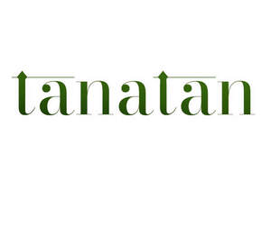

Trade Mark Journal No.2025/026 27 June 2025
UK00004220459 17 June 2025 (41,43)

- Class 41
- Live music services; Music entertainment services; Production of live entertainment events; Conducting of live entertainment events; Services providing entertainment in the form of live musical performances; Entertainment services in the nature of arranging social entertainment events; Presentation of live entertainment events; Music concert services; Entertainment services in the nature of organizing social entertainment events; Nightclub services [entertainment]; Entertainment club services; Club entertainment services; Club services [entertainment]; Arranging and conducting of live entertainment events; Entertainment services in the nature of sporting events; Providing will-call ticket services for entertainment, sporting and cultural events; Entertainment services relating to sporting events; Music publishing services; Entertainment services; Music library services; Provision of live music; Live demonstrations for entertainment; Entertainment services in the form of cinema performances; Music publishing and music recording services; Conducting of live sports events; Music performance services; Corporate entertainment services; Live entertainment; Live band performance services; Production of live entertainment features; Entertainment services in the nature of a wrestling club; Online entertainment services; Provision of live entertainment; Conducting of entertainment events; Sports entertainment services; Provision of entertainment services through the media of video-films; Social club services for entertainment purposes; Live performance services; Production of live entertainment; Live music concerts; Provision of club entertainment services; Booking of performing artists for events (services of a promoter); Organisation of entertainment services; Organisation of entertainment events; Entertainment services in the form of musical group performances; Karaoke lounge services; Live music performances; Providing facilities for movies, shows, plays, music or educational training; Hospitality services (entertainment); Presentation of live entertainment performances; Popular entertainment services; Karaoke services; Services for the organisation of sports events; Production of live television programmes for entertainment; Musical concert services; Services for the organisation of football events.
- Class 43
- Providing food and drink catering services for exhibition facilities; Catering services specialising in cutting ham for weddings and private events; Bar and restaurant services; Restaurant and bar services; Providing food and drink catering services for convention facilities; Catering services specialising in cutting ham for fairs, tastings and public events; Providing food and drink catering services for fair and exhibition facilities; Mobile catering services; Charitable services, namely providing food and drink catering; Catering services; Catering services for educational establishments; Consultancy services in the field of food and drink catering; Bar services; Business catering services; Outside catering services; Restaurant services; Restaurant services incorporating licensed bar facilities; Hotel catering services; Wine bar services; Catering services for the provision of food and drink; Catering services for providing Spanish cuisine; Catering services for schools; Catering services for providing European-style cuisine.
Date & Daffodils Ltd